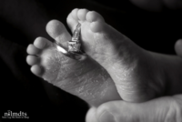

Now I Lay Me Down To Sleep
Now I Lay Me Down to Sleeps Mission
To introduce remembrance photography to parents suffering the loss of a baby with a free gift of professional portraiture. NILMDTS offers the gift of healing, hope and honor to parents experiencing the death of a baby through the overwhelming power of remembrance portraits. Professional-level photographers volunteer their time to conduct an intimate portrait session, capturing the only moments parents spend with their babies. Parents are gifted with delicately retouched heirloom black and white portraits free of charge.
What Do I Do?
I personally am an Affiliated Photographer as well as a Level 1 Digital Retouch Artist. I have served over 20 familes since my inception to NILMDTS in 2020 and serve multiple hopsitals in Northern Michigan.
{kind=link}
Why Did I Get Involved?
In 2016 I photographed a Grief Seminar for Golden Intentions and at this Seminar, the NILMDTS photographer at the time had an informational booth. I talked to him for quite a while about the work that he did and became very interested but my photography was not quite up to par with the Organization yet.
In June of 2019, my best friends sister lost her son, my nephew, at 38 weeks gestation. NILMDTS came into her hospital room and provided the most precious portraits of my nephew and his family. Because of NILMDTS, even though his time on earth was short, we have those portaits to remember him by.
Seeing the impact that session had on my best friends family, I knew it was time to step up and work on my photography skills so I could apply to become a photographer for the Organization.
In 2020 I was accepted as a NILMDTS Affiliated Photographer.
Want to learn more?
Head over to nowilaymedowntosleep.org and expore all the programs we have to offer!